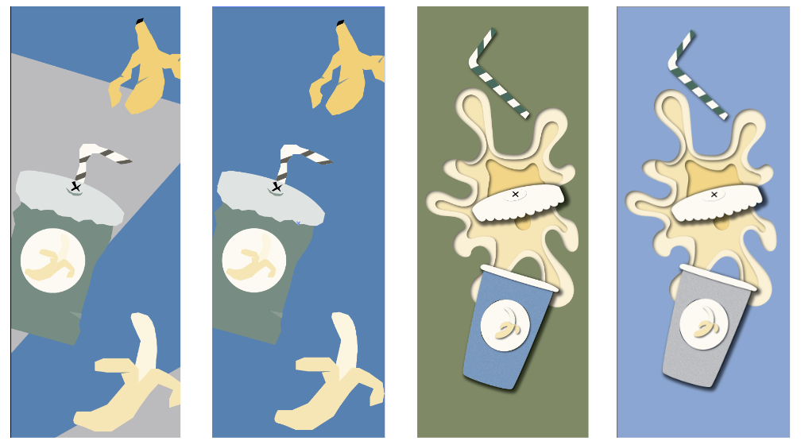
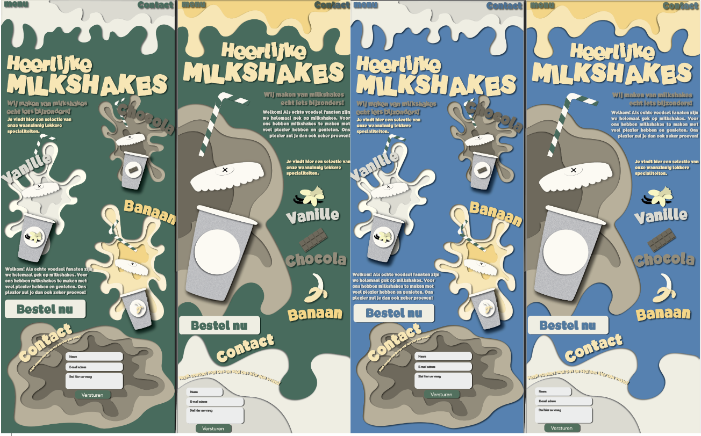

For this project we got assigned a style in which we had to make a poster about one of our favorite foods or drinks. The style that i had to make a poster in was the paper-cutout style, so I had to make my poster look like it was made with paper. I chose milkshakes as the food I wanted to make the poster out of.
I started by making a few iterations on how i wanted to create this paper cutout style; I ended up struggling to pick between these two different ways of realising the style. Either I went for the flat option, which felt more like something made out of paper. Or I went for the other, which granted, still looked like paper but also incorporated a 3D effect, which ended up being the dealbreaker for me
The next step in the process was improving my skill in this style and experimenting with it abit. Besides this I also had to figure out how to get every element needed on the poster and where to place these elements
After fitting every element on the poster, I had to decide on what colours I should use. I made multiple iterations again, with different colours and different layouts. I felt like the blue would work the best, as it gives the feeling off something cool, just like the milkshake itself
FINAL
RESULT